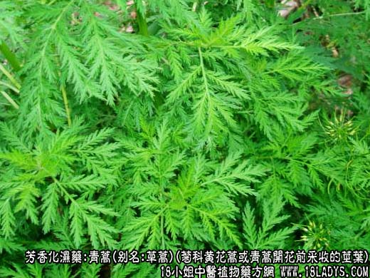
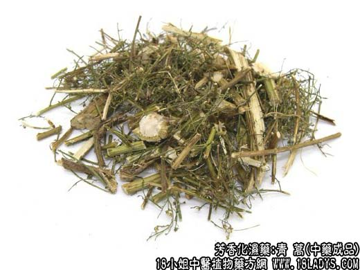
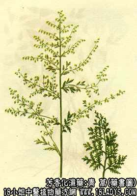

青蒿为较常用中药。《神农本草经》列为下品。
来源：为菊科一年生或二年生草本植物黄花蒿或青蒿开花前采收的茎叶，野生。
产地：全国各地均有产。
性状鉴别：黄花蒿（臭蒿），全株长约50~100厘米，基部直径约1~2厘米，上部渐细，多分枝。茎黄绿色或褐色，有多数纵向棱线，质硬。折断面白瓤占很大比重。叶片为三回羽裂，干后均碎断零落。气香，味微苦。
青蒿（香蒿）：形与黄花蒿略同，唯叶为二回羽状裂，深秋仍绿不变黄色。气味香浓。
两种均以色青绿未开花香气浓者为佳。
主要成分：含青蒿素、挥发油和苦味质等。
药理作用：1、解热发汗。尤其适宜于清热暑热以及解退驰张热和原因不明的久热，但在高热和热病进展期，解热效果不甚显著。
2、止血。对鼻出血和紫斑，有一定治疗效果。
炮制：切咀生用，或鳖血制。
性味：苦、寒。
归经：入肝、胆经。
功能：清热凉血，解暑除蒸。
主治：暑邪发热，阴虚发热，疟疾，骨蒸劳热。
临床应用：主要用于清热虚热河暑热。前人的经验说：“青蒿为清热凉血退蒸之良药”，现代实践也主要是用于血虚而有热者。
1、治疗血虚发热（多属慢性消耗性疾病所致的阴虚发热）、潮热盗汗，配地骨皮、白薇等。又可在滋补药中，加入青蒿一味，帮助解热。
2、治疗温病后期，夜热早凉，热退无汗。配生地、知母、地骨皮等清热凉血药，方如青蒿鳖甲汤。
3、用于清解暑热（即夏令感冒，或中暑、低热）。发热止汗，胸闷头晕者用之最宜，可配薄荷或甘草、滑石等。
3、治疗紫斑、鼻出血等，取其有清热凉血作用，有一定效果。治鼻出血用鲜青蒿捣汁加冷开水冲服。治紫斑配升麻、鳖甲、当归、生地等同用。
5、治皮肤瘙痒。煎水熏洗。
使用注意：1、青蒿气味芳香，地肠胃刺激不大，与一般苦寒药又伤脾胃者不同，但有泄泻者仍不宜用。出汗多者也要慎用。
2、青蒿虽可用全草，但主要靠其叶，清透解肌。青蒿子无退热功能，但可治便秘。
用量：常用量3~9g，为加强解热作用，有时须用15~24g。
处方举例：青蒿鳖甲汤（《温病条辨》）：青蒿6g，鳖甲15g，细生地12g，知母6g，丹皮9g，水煎服。
注：江苏、上海等地以牡蒿作青蒿用，山东地区用茵陈蒿作青蒿用。品种比较混乱。